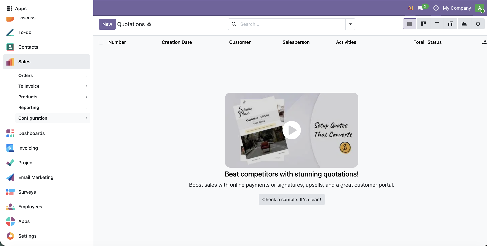
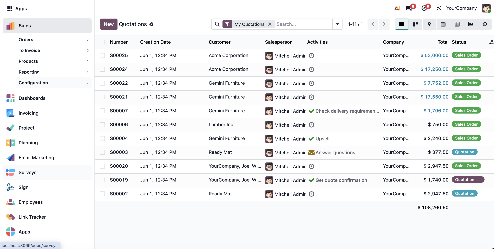

Move Odoo apps, menu categories, and menu actions into a scrollable left sidebar. The sidebar works on both Odoo Community and Enterprise, supports foldable menu groups, and keeps list, form, kanban, and other views beside the menu.
Community users get the same left sidebar navigation with scrollable apps and expandable submenu groups.

Enterprise users can use the sidebar with the Enterprise web client while keeping menu actions visible beside the main view.
